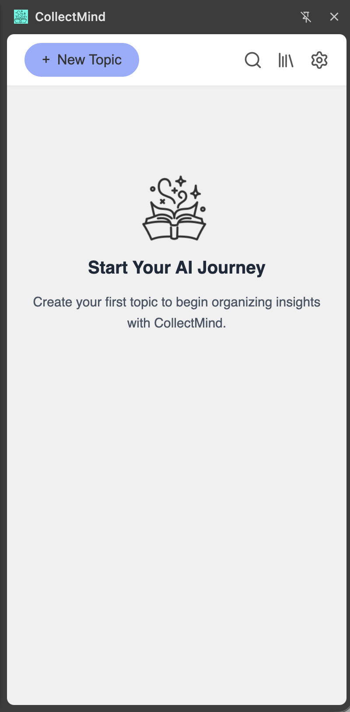
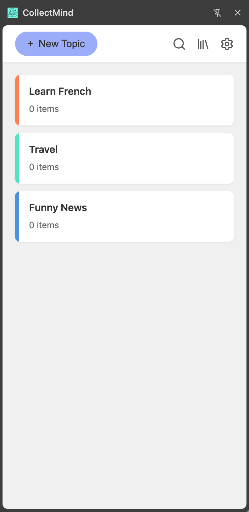
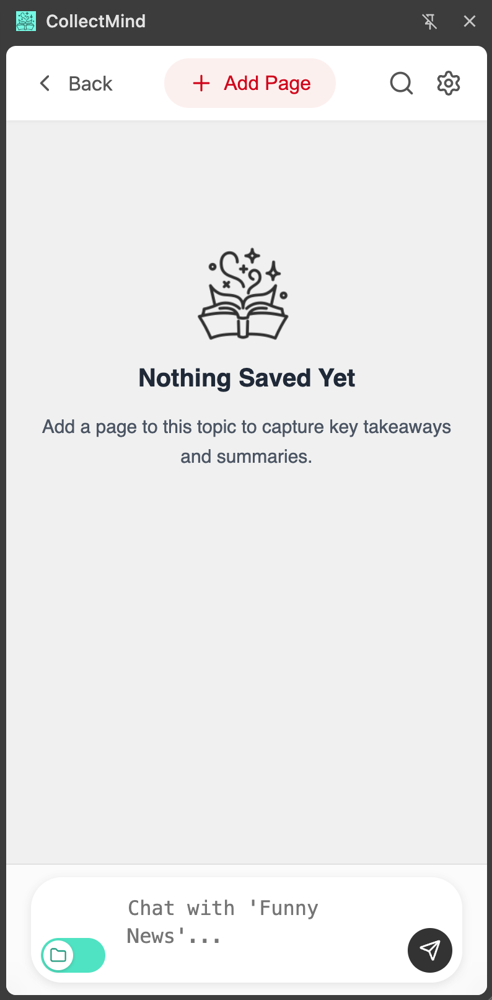
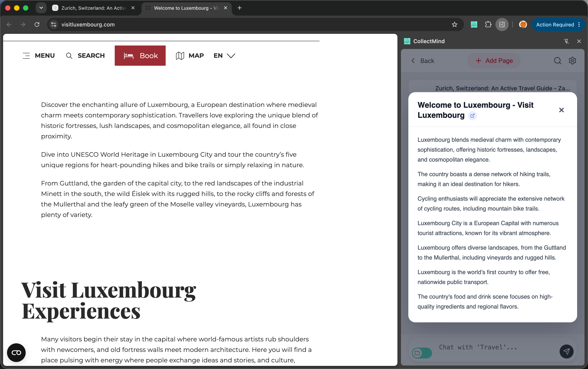
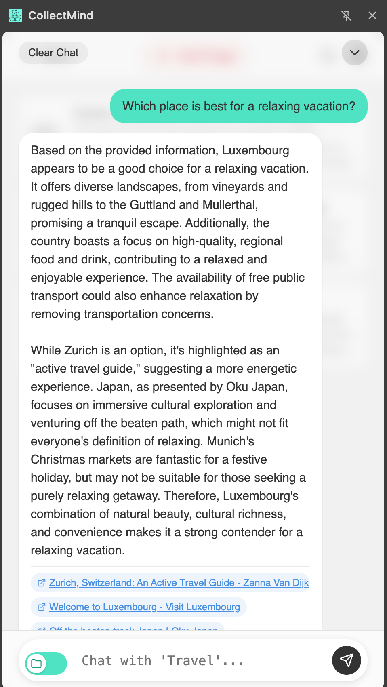
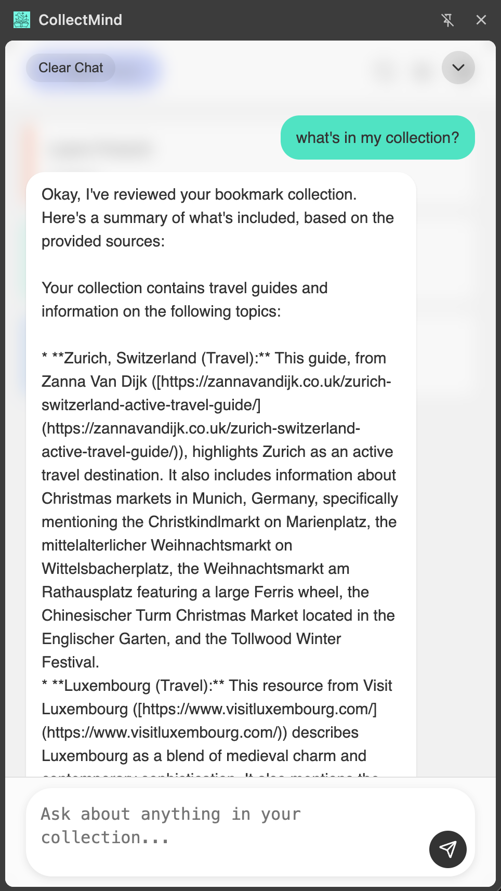
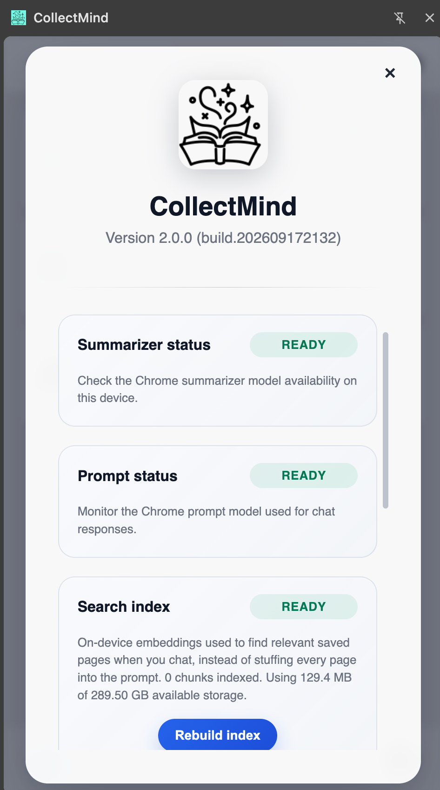
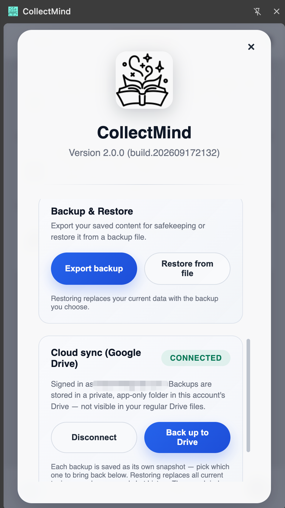

CollectMind organizes what you save, summarizes it automatically, and lets you chat with a single page, a whole topic, or your entire collection — powered entirely by the AI already built into Chrome.
Free & open source · MIT licensed · Chrome 138+
Bookmarking is easy. Finding it again — and remembering why you saved it — is the hard part.
Group saved pages into topics instead of one long, unsearchable bookmarks list.
Bookmark the page you're on with a single click, right from the side panel.
Every saved page gets summarized on-device the moment it's added — no waiting, no setup.
Ask questions about a topic and get answers grounded in your saved pages, with clickable source citations.
Ask about the page you're currently reading, even before you decide to save it.
"Library" mode searches every topic at once — no more remembering which topic you filed something under.
Topic-level overviews stay fresh automatically as you add more pages.
Save snapshots locally or to your own Google Drive, and restore any of them, any time.
CollectMind runs entirely on Chrome's built-in AI plus a small local embedding model — nothing is sent to a server.
The Summarizer and Prompt APIs — running on-device, inside Chrome itself — handle page summaries and conversational answers.
Saved pages are split into chunks and embedded locally with a small model
(Xenova/multilingual-e5-small). When you chat, only the most
relevant chunks are retrieved and fed to the model, instead of stuffing every
saved page into the prompt.
Topics, pages, chat history, and the search index all live in IndexedDB, on your machine — check indexing status and rebuild it any time from Settings.








CollectMind is free, open source, and runs entirely on your device.